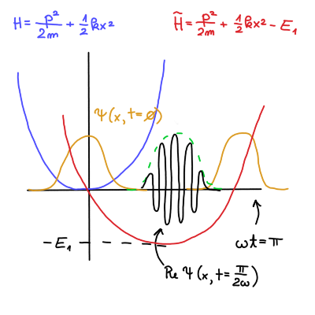

7. vaje iz Kvantne mehanike
Table of Contents
1. Harmonski oscilator v električnem polju
Nadaljujem nalogo od zadnjič. Spomnimo, da je Hamiltonian harmonskega oscilatorja enak
\[ H = \frac{p ^2}{2m} + \frac{1}{2} k x ^2 = \hbar \omega \left( a^{\dagger} a + \frac{1}{2} \right), \]
kjer sta \( a \) anihilacijski in \( a^{\dagger} \) kreacijski operator definirana kot
\[ a = \frac{1}{\sqrt{2}} \left( \frac{x}{x_0} + \mathrm{i} \frac{p}{p_0} \right), \quad x_0 = \sqrt{\frac{\hbar}{m \omega}} \text{ in } p_0 = \frac{\hbar}{x_0} \]
Kreacijski in anihilacijski operator ne komutirata, saj velja zveza
\[ \left[ a, a^{\dagger} \right] = 1 \]
Kvadrata pričakovanih vrednosti kraja in gibalne količine sta kot izpeljano na predavanjih
\begin{align} \label{eq:kraj} \left\langle x ^2 \right\rangle &= x_0 ^2 \left( \mathrm{Re} \left\langle a ^2 \right\rangle + \left\langle a^{\dagger} a \right\rangle + \frac{1}{2} \right) \\ \label{eq:gk} \left\langle p ^2 \right\rangle &= p_0 ^2 \left( - \mathrm{Re} \left\langle a ^2 \right\rangle + \left\langle a^{\dagger} a \right\rangle + \frac{1}{2} \right) \end{align}Definirali smo tudi koherentno stanje harmonskega oscilatorja, kjer za \( z \in \mathbb{C} \) velja
\[ a \left| z \right\rangle = z \left| z \right\rangle \]
Časovni razvoj začetnega stanja \( \left| \psi, 0 \right\rangle = \left| z \right\rangle\) je enak
\begin{equation} \label{eq:1} \left| \psi, t \right\rangle = \exp \left\{ - \mathrm{i} \frac{\omega t}{2} \right\} \left| z \exp \left\{ - \mathrm{i} \omega t \right\} \right\rangle = \left| z, t \right\rangle \end{equation}Pričakovana vrednost kraja in gibalne količine sta
\[ \left\langle x \right\rangle = \sqrt{2} x_0 \mathrm{Re} z \text{ in } \left\langle p \right\rangle = \sqrt{2} p_0 \mathrm{Im} z \]
Po času \( t = 0 \) vklopimo električno polje se harmonski oscilator modificira v
\[ \tilde{H} = \frac{\tilde{p} ^2}{2m} + \frac{1}{2} k x ^2 - E_1, \]
kjer velja \( \tilde{x} = x - x_1 \) in \( \tilde{p} = p \). \( x_1 \) je definiran iz klasičnega harmonskega oscilatorja in je enak \( x_1 = \frac{e \epsilon}{k} \). Kreacijski operator novega harmonskega oscilatorja je
\[ \tilde{a} = \frac{1}{\sqrt{2}} \left( \frac{\tilde{x}}{x} + \mathrm{i} \frac{\tilde{p}}{p_0} \right) = a - \frac{x_1}{\sqrt{2} x_0} \]
Ne moremo zahtevati identičnega začetnega pogoja kot pri klasičnem harmonskem oscilatorju, saj bi kršili Heisenbergov princip nedoločenosti. Namesto tega uporabimo najbližji ekvivalent - osnovne stanje harmonskega oscilatorja pred vklopom električnega polja \( \left| \psi, 0 \right\rangle = \left| 0 \right\rangle \).
Anihilacijski operator \( a \) ima na začetno stanje sledeče učinek
\[ a \left| \psi, 0 \right\rangle = 0. \]
Novi anihilacijski operator \( \tilde{a} \) pa modificira začetno stanje v
\[\tilde{a} \left| \psi, 0 \right\rangle = - \frac{x_1}{\sqrt{2}x_0} \left| \psi, 0 \right\rangle. \]
Označimo torej
\[ \left|\psi, 0 \right\rangle = \left| z \right\rangle; \quad z = - \frac{x_1}{\sqrt{2}x_0} \]
Iz definicij \ref{eq:kraj} in \ref{eq:gk} želimo priti do njunih vrednosti, ko je vključeno električno polje.
\begin{align} \left\langle x ^2 \right\rangle &= x_0 ^2 \left( \mathrm{Re} \left\langle a ^2 \right\rangle + \left\langle a^{\dagger} a \right\rangle + \frac{1}{2} \right) \\ &= x_0 ^2 \left( \mathrm{Re} z ^2 + z ^{\ast} z + \frac{1}{2} \right) \\ \left\langle p ^2 \right\rangle &= p_0 ^2 \left( - \mathrm{Re} \left\langle a ^2 \right\rangle + \left\langle a^{\dagger} a \right\rangle + \frac{1}{2} \right) \\ &= p_0 ^2 \left( - \mathrm{Re} z ^2 + z^{\ast} z + \frac{1}{2} \right) \end{align}Nedoločenost kraja je po definiciji \( \delta ^2 x = \left\langle x ^2 \right\rangle - \left\langle x \right\rangle ^2\). Upoštevamo zgoraj izpeljane količine, da dobimo
\begin{align*} \delta ^2 x &= \left\langle x ^2 \right\rangle- \left\langle x \right\rangle ^2 = x_0 ^2 \left( \mathrm{Re} z ^2 + z^{\ast} z ++ \frac{1}{2} \right) - 2x_0 ^2 \mathrm{Re} z ^2 \\ &= x_0 ^2 \left( \frac{z^{\ast 2}+ z ^2}{2} + z^{\ast} z + \frac{1}{2} \right) - 2 x_0 \frac{z^{\ast 2} + 2 z^{\ast} z + z ^2}{2} \\ &= \frac{1}{2} x_0 ^2 \end{align*}Upoštevali smo identiteto
\[ \mathrm{Re} z ^2 = \frac{z ^2 + z^{\ast 2}}{2}. \]
Podobno identiteto
\[ \mathrm{Im} z ^2 = \frac{z ^2 - z ^{\ast 2}}{2} \]
uporabimo, da dobimo nedoločenost gibalne količine
\[ \delta ^2 p = \frac{p_0 ^2}{2}. \]
Nedoločenost tega stanja je enostavno Gaussov valovni paket, saj \( \delta x \delta p = \frac{\hbar}{2} \). Gaussov valovni paket je sedaj
\[ \psi_z (x) = \frac{1}{\sqrt[4]{\pi x_0 ^2}} \exp \left\{ - \frac{\left( x - \sqrt{2} x_0 \mathrm{Re} z \right) ^2}{2x_0 ^2} \right\} \exp \left\{ \mathrm{i} \frac{\sqrt{2} p_0 \mathrm{Im} z}{\hbar} x \right\}. \]
Ta valovni paket ima en parameter manj (\( s \)), kakor tisti, ki smo ga že izpeljali na predavanjih.
Pričakovani vrednosti Hamiltoniana in kvadrata Hamiltoniana sta
\[ \left\langle H \right\rangle= \hbar \omega \left( z^{\ast} z + \frac{1}{2} \right) \]
ter
\begin{align*} \left\langle H ^2 \right\rangle &= \left\langle \hbar ^2 \omega ^2 \left( z^{\ast} z + \frac{1}{2} \right) ^2 \right\rangle \end{align*}[dopolni, str. 42]
pri računanju smo morali biti biti pozorni na vrstni red operacij (oz. nekomutacijo).
Z danim začetnim stanjem \( \left| \psi, 0 \right\rangle = \left| z \right\rangle \) bi radi izračunali časovni razvoj za nov Hamiltonian z vklopljenim električnim poljem. Upoštevamo \ref{eq:1}, kjer dodamo faktor, za koliko je začetno stanje nižje (\( E_1 \)) od navadnega Hamiltoniana.
\[ \left| \psi, t \right\rangle = \exp \left\{ - \frac{\mathrm{i} \omega t}{2} \right\} \left| z \exp \left\{ - \mathrm{i} \omega t \right\} \right\rangle \exp \left\{ - \mathrm{i} \frac{E_1}{\hbar}t \right\} \]
Ta novi faktor nima vpliva pri opazljivkah, saj se pri računanju faktor odšteje s svojo konjugirano vrednostjo iz bra-ja.
Časovna odvisnost pričakovane vrednosti kraja je
\begin{align*} \left\langle x, t \right\rangle &= \left\langle \tilde{x}, t \right\rangle + x_1 = \sqrt{2} x_0 \mathrm{Re} \left( z \exp \left\{ - \mathrm{i} \omega t \right\} \right) + x_1 \\ &= \sqrt{2} x_0 \frac{x_1}{\sqrt{2} x_0} \mathrm{Re} \left( \exp \left\{ - \mathrm{i} \omega t \right\} \right) + x_1 \\ &= x_1 \left( 1 - \cos (\omega t) \right) \end{align*}Vidimo, da smo dobili enak rezultat kot pri klasičnem harmonskem oscilatorju v električnem polju.
Naš harmonski oscilator ima vedno obliko Gaussovega paketa, vendar je samo v skrajnih lega dejanski valovni paket. V vmesnih stanjih valovanje valovne funkcije tvori ovojnico Gaussovega paketa. Glej priloženo sliko

Pri fazi \( \omega t = \frac{\pi}{2} \) je \( z = - \mathrm{i} \frac{x_1}{\sqrt{2} x_0} \in \mathrm{i} \mathbb{R} \). Pri fazi \( \omega t = \pi \) pa je \( z = \frac{x_1}{\sqrt{2} x_0} \in \mathbb{R} \).
2. Dvodimenzionalni harmonski oscilator 2_kolokvij_snov
2.1. Teorija
Imamo dvodimenzionalni Hamiltonian s harmonskim potencialom
\[ H = \frac{p_x ^2}{2m} + \frac{p_y ^2}{2m} + \frac{1}{2} k_x x ^2 + \frac{1}{2} k_y y ^2 = H_x + H_y, \]
kjer velja
\[ H_i = \frac{p_i ^2}{2m} + \frac{1}{2} k_i i ^2, \quad i= x, y. \]
Zanimajo nas lastna stanja in lastne energije za tak harmonski oscilator.
Za posamezno dimenzijo velja
\begin{align*} H_x \psi_x (x) &= E_x \psi_x (x) \\ H_y \psi_y (y) &= E_y \psi_y (y). \end{align*}Zanima pa nas celoten Hamiltonian
\[ H \psi(x, y) = E \psi(x, y). \]
Od prej vemo, da velja potem enakost za lastna stanja
\[ \psi(x, y) = \psi_x (x) \psi_y (y) \]
ter za lastne energije
\begin{equation} \label{eq:2} E = E_x + E_y. \end{equation}Lastne energije harmonskega oscilatorja so ob upoštevanju enodimenzionalnih harmonskih oscilatorjev enake
\[ E = \hbar \omega_x \left( n_x + \frac{1}{2} \right) + \hbar \omega_y \left( n_y + \frac{1}{2} \right), \quad \omega_i = \sqrt{\frac{k_i}{m}} \]
V Diracovem zapisu bomo Schrödingerjevo enačbo zapiše kot
\begin{equation} \label{eq:3} H \left| n_x \right\rangle \left| n_y \right\rangle = E \left| n_x \right\rangle \left| n_y \right\rangle. \end{equation}Harmonska oscilatorja v \( x \) in \( y \) komponenti sta vsak v svojem Hilbertovem prostoru. Harmonski oscilator v dveh dimenzijah je večji Hilbertov prostor, katerega baza je sestavljena iz harmonskih oscilatorjev posameznih komponent. Krajše enačbo zapišemo kot
\[ H \left| n_x n_y \right\rangle = E \left| n_x n_y \right\rangle \]
2.1.1. Posebni primeri
Opazujemo primer, ko \( k_x > 0 \) in \( k_y = 0 \).
Lastna funkcija Hamiltoniana v \( y \) koordinati je samo ravni val \( \psi_y (y) = \exp \left\{ \mathrm{i} q y \right\} \). Energija tega stanja je energija ravnega vala \( E_y = \frac{\hbar ^2 q ^2}{2m} \), energija dvodimenzionalnega Hamiltoniana pa je
\[ E = \hbar \omega_x \left( n_x + \frac{1}{2} \right) + \frac{\hbar ^2 q ^2}{2m} \]
Drugi poseben primer je \( k_x = k_y = k \) oz. z drugimi besedami je to izotropen dvodimenzionalni harmonski oscilator. Hamiltonian je tako oblike
\[ H_0 = \frac{p ^2}{2m} + \frac{1}{2} k r ^2, \quad r ^2 = x ^2 + y ^2 \]
Ker sta valovna vektorja enaka, je tudi frekvenca enaka, torej bo energija
\[ E = \hbar \omega \left( n_x + n_y + 1 \right) \]
Osnovno stanje takega harmonskega oscilatorja je pri \( n_x = n_y = 0 \), in stacionarna Schrödingerjeva enačba je
\[ H \left| 0, 0 \right\rangle = \hbar \omega \left| 0, 0 \right\rangle \]
Prvi vzbujeni stanji sta
\[ H \left| 1, 0 \right\rangle = 2 \hbar \omega \left| 1, 0 \right\rangle \text{ in } H \left| 0, 1 \right\rangle = 2 \hbar \omega \left| 0, 1 \right\rangle, \]
torej je dvakrat degenerirano. Rešitev tega stanja je tudi linearna kombinacija teh dveh vzbujeni stanj
\[ H \left( \alpha \left| 1, 0 \right\rangle + \beta \left| 0, 1 \right\rangle\right) = 2 \hbar \omega \left( \alpha \left| 1, 0 \right\rangle + \beta \left| 0, 1 \right\rangle\right), \ \alpha, \beta \in \mathbb{C} \]
2.1.2. Vrtilna količina \( z \)
Hamiltonianu dodamo člen \( \lambda L_z \), da ima obliko
\[ H = \frac{p ^2}{2m} + \frac{1}{2} k r ^2 + \lambda L_z = H_0 + \lambda L_z, \ L_z = xp_y - y p_x = - \mathrm{i} \hbar \frac{\partial }{\partial \phi}. \]
Zanima nas, kako ta novi člen vpliva na lastna stanja in lastne energije našega problema.
Operator gibalne količine v cilindričnih koordinatah je
\[ \frac{p ^2}{2m} = - \frac{\hbar ^2}{2m} \nabla ^2 = - \frac{\hbar ^2}{2m} \left( \frac{1}{r} \frac{\partial }{\partial r} \left( r \frac{\partial }{\partial r} \right) + \frac{1}{r ^2} \frac{\partial ^2 }{\partial \phi ^2} \right) \]
Operatorja \( H_0 \) in \( L_z \) komutirata
\begin{align*} \left[ H_0, L_z \right] &= 0 \end{align*}[dopolni]
Naj bo \( F(\phi) \) lastna funkcija \( L_z \). Potem velja
\[ L_z F(\phi) = \lambda F(\phi) \]
Rešujemo torej diferencialno enačbo
\[ - \mathrm{i} \hbar \frac{\partial }{\partial \phi} F(\phi) = \lambda F(\phi), \]
katere rešitev je
\[ F = A \exp \left\{ - \frac{\lambda}{\mathrm{i} \hbar} \phi \right\}. \]
Zahtevamo periodičnost \( F(\phi + 2 \pi) = F(\phi) \), iz česar sledi enačba
\[ A \exp \left\{ - \frac{\lambda}{\mathrm{i} \hbar} \phi \right\} = A \exp \left\{ \mathrm{i} m \phi \right\}, \]
in nato enakost \( \lambda= \hbar m \).
Konstanto \( A \) določimo iz normiranosti
\[ \int\limits_0^{2\pi} \left| F(\phi) \right| ^2 \, \mathrm{d} \phi = 1 \implies \ A = \frac{1}{\sqrt{2\pi}} \]
Torej je lastna funkcija operatorja \( L_z \)
\begin{equation} \label{eq:4} F_m (\phi) = \frac{1}{\sqrt{2\pi}} e^{\mathrm{i} m \phi}, \ m \in \mathbb{Z}, \end{equation}enačba pa se glasi
\[ L_z F_m(\phi) = \hbar m F_m (\phi) \]
2.2. Naloga
Opazujemo Harmonski oscilator v prvem vzbujenem stanju \( E = 2 \hbar \omega \). Vzbujena stanja sta
\begin{align*} \psi_{10} (x, y) &= \psi_1 (x) \psi_0 (y) = \left| 1, 0 \right\rangle \\ \psi_{01}(x, y) &= \psi_0 (x) \psi_1 (y) = \left| 0, 1 \right\rangle \end{align*}Iz prejšnje naloge vemo, da so lastne funkcije koherentnih stanj Gaussovi paketi. Če je koherentno stanje \( z = 0 \), potem \( \left\langle x \right\rangle = 0 \) in \( \left\langle p \right\rangle = 0 \), iz česar sledi
\[ \psi_0 (x) = \frac{1}{\sqrt[4]{\pi x_0 ^2}} \exp \left\{ - \frac{x ^2}{2x_0 ^2} \right\} \]
Zaradi kreacijskega faktorja vemo, da velja
\[ a ^{\dagger} \psi_0 (x) = 1 \cdot \psi_1 (x) \]
Upoštevajoč definicijo kreacijskega faktorja in Gaussovega valovnega paketa.